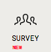
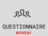
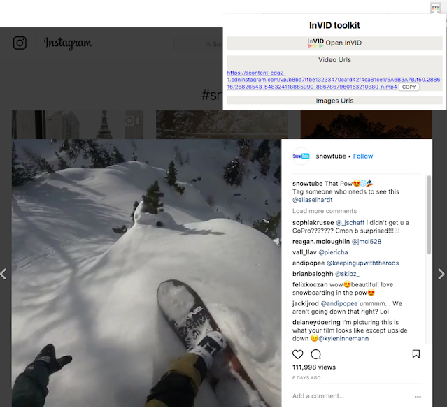

IN VIDEO VERITAS


This toolkit is provided in open source (under an MIT Licence) by the InVID european project to help journalists to verify content on social networks (please note that external InVID services used via this interface, such as those presented under the Analysis and Keyframes tabs, are not open-sourced).
Cet outil est publié en open source (sous une Licence MIT) par le projet européen InVID pour aider les journalistes à vérifier les images et les vidéos, notamment sur les réseaux sociaux (note: certains des services externes d'InVID utilisés par cette interface, comme ceux présentés dans les onglets Analyse et Images clés, ne sont pas diffusés en licence open source).
It has been designed as a verification “Swiss army knife” helping journalists to save time and be more efficient in their fact-checking tasks. This is a beta version and we will update it regularly thanks to your feedback.
Il a été conçu comme un "couteau suisse" de vérification pour permettre les journalistes à gagner du temps et être plus efficaces dans leur travail de vérification. C'est une version en développement et elle sera mise à jour régulièrement grâce à vos retours.
For any feedback (bugs, enhancement, suggestions) please email us at invid-verification-plugin@iti.gr, or leave us a direct message through the feedback widget at the bottom left. If you use our plugin regularly, thanks to give us your feedback through the permanent survey in the top right menu : 
Pour tout retour (problèmes, améliorations, suggestions), merci de nous envoyer un mail à invid-verification-plugin@iti.gr, ou de nous laisser un message via le bouton "feedback" en bas à gauche. Si vous utilisez notre extension régulièrement, merci de nous envoyer vos retours en remplissant le questionnaire présent dans le menu en haut à droite : 
Disclaimer: this software is provided "as is", without warranty of any kind, express or implied, including but not limited to the warranties of merchantability, fitness for a particular purpose and noninfringement. In no event shall the authors or copyright holders be liable for any claim, damages or other liability, whether in an action of contract, tort or otherwise, arising from, out of or in connection with the software or the use or other dealings in the software.
Avertissement: ce logiciel est fourni tel quel, sans aucune garantie explicite ou implicite, y compris mais non limité à sa qualité marchande, sa robustesse et toute garantie d'absence de contrefaçon. En aucun cas, les auteurs ou détenteurs du copyright ne sont responsables pour toute réclamation, dommages ou autre responsabilité, en lien avec ce logiciel ou son utilisation.
Privacy: this plugin does not gather any personal data. We implemented Google analytics only to get feedback and statistics about the tool usage, in order to improve the next releases.
Sécurité: cette extension n'utilise pas vos données personnelles. Les données récupérées via Google Analytics sont anonymisées et ne servent qu'à obtenir des statistiques d'usage sur l'utilisation de l'extension, dans le but d'améliorer les prochaines versions.
InVID is a Horizon 2020 innovation action funded by the European Union under grant agreement 687786. For more information, visit our InVID website or follow us on Twitter.
InVID est un projet financé par le programme Horizon 2020 de l'Union Européenne, sous l'accord de subvention 687786. Pour plus d'information sur le projet, visitez le site InVID ou suivez-nous sur Twitter.
The initial versions (0.1-0.6) of this plugin have been developed by AFP Medialab (Denis TEYSSOU, Jean-Michel LEUNG, Nathan GOYAT, Bertrand GOUPIL). The underlying services are provided by Thessaloniki Information Technologies Institute (ITI, CERTH).
Les premières versions (0.1-0.6) de cette extension ont été développées par le Medialab de l'AFP (Denis TEYSSOU, Jean-Michel LEUNG, Nathan GOYAT, Bertrand GOUPIL). Les services sous-jacents sont fournis par Thessaloniki Information Technologies Institute (ITI, CERTH).
This launcher (introduced in v0.60) to access the InVID plugin aims to help journalists (and users) to retrieve videos and images urls within the code of a web page:
Ce menu intermédiaire (introduit dans la v0.60) pour accéder à l'outil InVID vise à aider les journalistes (et utilisateurs) à récupérer les liens des images et vidéos à l'intérieur du code d'une page web:
Here, below, is an example of a video url retrieval on Instagram.
En dessous se trouve un exemple de la récupération d'urls vidéo sur Instagram. The first Analysis tab allows you to query the InVID context aggregation and analysis service developed by the Thessaloniki Information Technologies Institute (ITI). In a nutshell, this service is an enhanced metadata viewer for Youtube, Facebook and Twitter videos that allows you to retrieve contextual information, location (if detected), most interesting comments, apply reverse image search and check for tweets on the video (on Youtube). Be aware that the service may take some time if the video processed has a lot of comments. A new feature (a reprocess button) allows you to refresh the analysis.
Le premier onglet Analyse vous permet d'effectuer des requêtes sur le service aggregation et analyse d'InVID développé par Thessaloniki Information Technologies Institute En simplifié, ce service est un visonneur de métadonnées amélioré pour les vidéo Youtube , Facebook et Twitter, qui vous permet de récupérer les informations contextuelles, localisations (si détecté), la plupart des commentaires intéressants, d'appliquer la recherche d'image inversée et de vérifier les tweets correspondants à la vidéo (pour Youtube). Soyez conscient que le service peut prendre du temps si la vidéo possède beaucoup de commentaires. Une nouvelle fonction (le bouton reprocess) vous permet de rafraichir l'analyse.
The second Keyframe tab is an iframe opening the website of Thessaloniki Information Technologies Institute (ITI) on video fragmentation. It allows you to copy a video url (from Youtube, Twitter, Facebook, Daily Motion or Dropbox) or to upload a video file (in mp4, webm, avi, mov, wmv, ogv, mpg, flv, and mkv format) in order to segment it in keyframes which then can be searched with a right click on Google, Yandex, Tineye and Baidu images. Our service extracts more keyframes and therefore gives the opportunity to enhance the video reverse image search. Those are the real keyframes of the video, not the thumbnails served by Youtube or Facebook.
Le second onglet Images clés est une iframe contenant le site de Thessaloniki Information Technologies Institute (ITI) sur la fragmentation vidéo. Il vous permet en copiant une adresse vidéo (Youtube, Twitter, Facebook, Daily Motion, Instagram or Dropbox) ou en téléchargeant un fichier vidéo (mp4, webm, avi, mov, wmv, ogv, mpg, fly, ou mkv) de le fragmenter en images clés qui peuvent être ensuite recherchées avec un clic droit sur Google, Yandex, Tineye ou Baidu image. Notre service peut extraire davantage d'images clés et donc vous donne l'opportunité d'élargir votre recherche inversée d'image. Ces images viennent de la vidéo elle-même, non des imagettes fournies par la plateforme vidéo.
The Thumbnails tab allows you to quickly trigger a reverse image search on Google, Bing, Tineye or Yandex Images with the four thumbnails extracted from a Youtube video. Up to four tabs (according to the number of thumbnails available) are opened automatically in your browser with the results of the reverse search while the four thumbnails are also displayed in the plugin page. This tab is somewhat redundant with what can be done with the Analysis tab but it is very fast and efficient if you just need to look whether a Youtube video has already been published previously. Please note that the Chinese search engine Baidu is not implemented here because it is filtering out Youtube content.
L'onglet Imagettes vous permet de faire rapidement une recherche d'image inversée sur Google, Bing, Yandex ou Tineye avec les quatre imagettes fournies par Youtube sur ces vidéos. Jusqu'à quatre onglets (selon le nombre de imagettes disponibles) sont ouverts automatiquement dans votre navigateur avec les résultats de la recherche inversée pendant que les imagettes sont également affichées dans l'extension. Cet onglet est quelque peu redondant avec ce qui peut être fait dans l'onglet Analyse mais il est plus rapide et efficace si vous avez juste besoin de regarder si une vidéo de Youtube a déjà été publiée précédemment. Noter que la recherche avec le moteur Baidu n'est pas configurée dans cet onglet car ce moteur chinois filtre le contenu de Youtube.
The Search tab allows to enhance a Twitter advanced search for keywords or hashtag using the since and until operators, either separately or together to query within a time interval, up to the minute. It translates automatically the calendar date, hour and minutes into an unix timestamp to facilitate the query, e.g. of first eyewitness pictures or videos within a time range just after a breaking news event. We have also added other features from Twitter advanced such geocode, near, from, language and various filter operators.
L'onglet Recherche Tw vous permet d'améliorer votre recherche avancée sur Twitter par mot clé ou hashtag en utilisant les opérateurs depuis et jusqu'à, de manière séparée ou ensemble, pour effectuer des requêtes precises jusqu'à un intervalle d'une minute. Il traduit automatiquement les dates calendaires, heures et minutes en unités de temps Unix pour faciliter l'écriture de la requête, par exemple recherche les premiers témoignages photos ou vidéos lors d'un évènement important. Nous avons également ajouté d'autres filtres, comme les coordonnées de géolocalisation, la provenance, le compte Twitter, la langue...
The Magnifier lens tab allows you to display an image through its url and to zoom or apply a magnifying lens on the image, or/and to enhance it through a bicubic algorithm to help you discover implicit knowledge such as written words, signs, banners ... You can either enter the image url, upload an image from your local drive with the local file button. Once the image is displayed from an url, you can also perform a Google, Yandex, Tineye and Baidu reverse image search on it or use the Image forensic service designed by ITI and DW in the Reveal european project. If you are using a local image or you have modified any image (sharp, flip, bicubic), you can either download your modified image or, if using the flip function, use the Google images button which opens a new tab where you can directly copy and paste the image into the Google images searchbox (watch the video below). This Magnifier lens feature also supports links of stored images in Dropbox and Google drive.
L'onglet Loupe vous permet d'afficher une image partir de son url et de zoomer ou d'utiliser une loupe sur l'image pour aider à découvrir des éléments dans l'image comme du texte, des signes, pancartes... Vous pouvez aussi agrandir l'image grâce à un algorithme bicubic. Pour utiliser cette fonctionnalité, vous pouvez soit entrer l'adresse de l'image, soit charger une image depuis votre ordinateur grâce au bouton fichier local. Quand l'image est fournie depuis une adresse en ligne, vous pouvez également effectuer une recherche d'image inversée avec Google, Yandex, Tineye ou Baidu sur l'image ou utiliser le service Forensic créé par ITI et DW dans le projet européen Reveal. Si vous utilisez une image locale, ou si vous avez utilisé un filtre, vous pouvez soit télécharger l'image résultante, ou dans le cas du Miroir utiliser le bouton Google image qui s'ouvre dans un nouvel onglet de votre navigateur (voir la vidéo en dessous). Cette fonctionnalité de Loupe supporte également les liens d'images stockées sous Dropbox et Google Drive.
The Metadata tab allows you to check the Exif metadata of a picture in jpeg format or metadata of a vidéo in mp4/m4v format, either through a link either through a local file. If geocoordinates are available in the picture metadata, a geolocalise button is provided automatically pointing to this location on Google map.
L'onglet Métadonnées vous permet de vérifier les métadonnées Exif d'une image au format Jpeg ou les métadonnées d'une vidéo au format mp4/m4v, soit par l'adresse en ligne (url) soit en la chargeant depuis un fichier local. Si des coordonées sont trouvées dans les métadonnées de l'image, un bouton de géolocalisation apparait renvoyant vers la carte Google Map correspondante.
The Forensic tab is an iframe opening the still images forensic service developed by Thessaloniki Information Technologies Institute (ITI) in a previous european project on social media verification, Reveal. Eight different filters will help you to detect digital image tampering.
L'onglet Forensic est une iframe contenant le service d'imagerie forensic développé par Thessaloniki Information Technologies Institute (ITI) dans un projet européen précedent sur la vérification des réseaux sociaux, Reveal. Huit filtres vous aideront à détecter des manipulations de l'image numérique.
The Contextual menu (through a right click on an image or a video url) allows you to trigger this plugin on a still image or on a youtube video link. On an image, a right click will propose you either to open the picture in the Image magnifier to examine it more closely, or to launch reverse image search engines with the image. On a video link, a right click will propose you under the InVID menu to trigger either InVID video analysis or the Youtube thumbnail reverse search (for a Youtube video).
Le Menu contextuel (appui sur le clic droit de la souris sur une image, une video ou une adresse vers une image ou video) vous permet d'envoyer directement une image ou une video sur l'extension. Avec une image, vous pourrez ouvrir l'image dans le magnifier ou de lancer une recherche d'image inversée. Sur une vidéo, vous pourrez envoyer la vidéo dans les onglets Analyse ou Youtube imagettes si elle correspond aux critères de l'onglet souhaité.